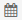
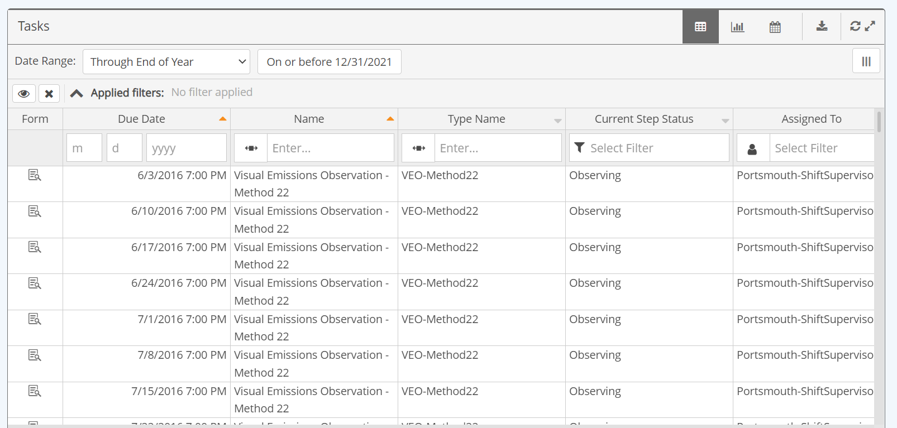
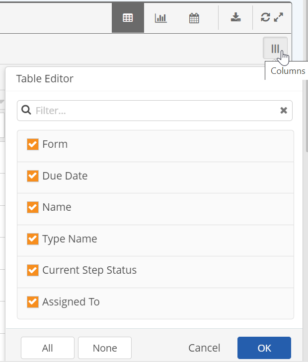
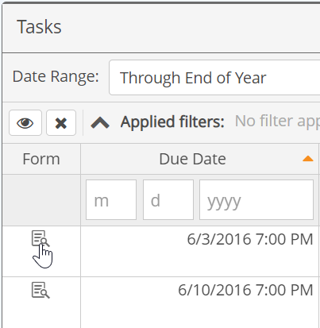
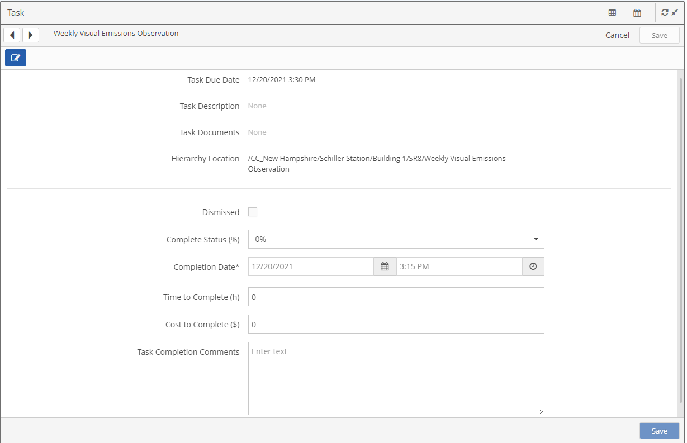

Choose the table  or Calendar
or Calendar

icon on the panel bar.You can view and complete tasks of all types from the Portal. Tasks that are associated with workflows or events will show the task data along with the workflow and/or event data. In the form you can complete the task as well as completing the workflow or documenting the event.
The panels can be viewed in table or calendar mode.
To change the panel view:
Choose the table or Calendar

icon on the panel bar.


To view or hide the columns displayed in the table:
Select the Table Editor button top right.
Checked columns are included in the display.

Tasks may be completed from the Portal using the Form link when it is displayed in the table. You can navigate from one task to the next using the Next and Previous buttons in the form in order to complete tasks consecutively.
To complete a task in the Portal:
Click the Form link in the table view.

A form will be displayed in edit mode if the item is assigned to you or you have edit permissions. The task name and description will be shown at the top with the task completion fields below.

If a workflow or an event is associated with the task, the workflow form or event fields will be also be displayed. Note that it is not necessary to determine whether the panel represents tasks, workflows or events. The form will display all fields associated with the record, with those requiring completion in editing mode.
Complete the required task fields and any of the optional fields that are appropriate.
Required task completion fields are:
Optional fields, which may also be displayed depending on configuration, include:
Click Save to save the task.
Click the Next/Previous arrow buttons at the top to see another task. Click Cancel to exit the form and return to the table.
Tasks associated with a workflow or an event may be accessed from a Workflow Panel or a Event Panel or a Task Panel. The data columns shown in the panel will depend on the panel type and configuration. Tasks not associated with workflows or events may be viewed only in a Task Panel.
You can sort and filter tasks in several ways from a Task Panel. See Filter Tasks.